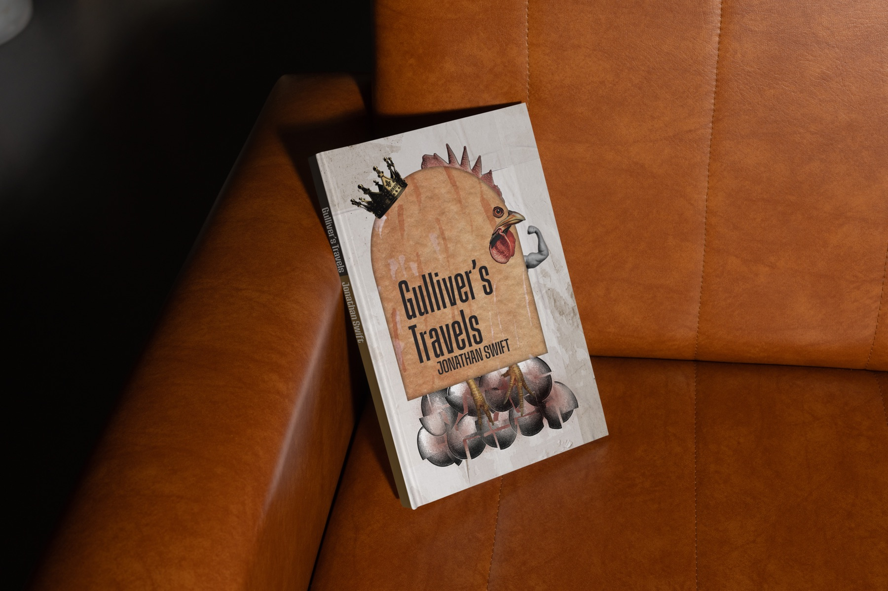
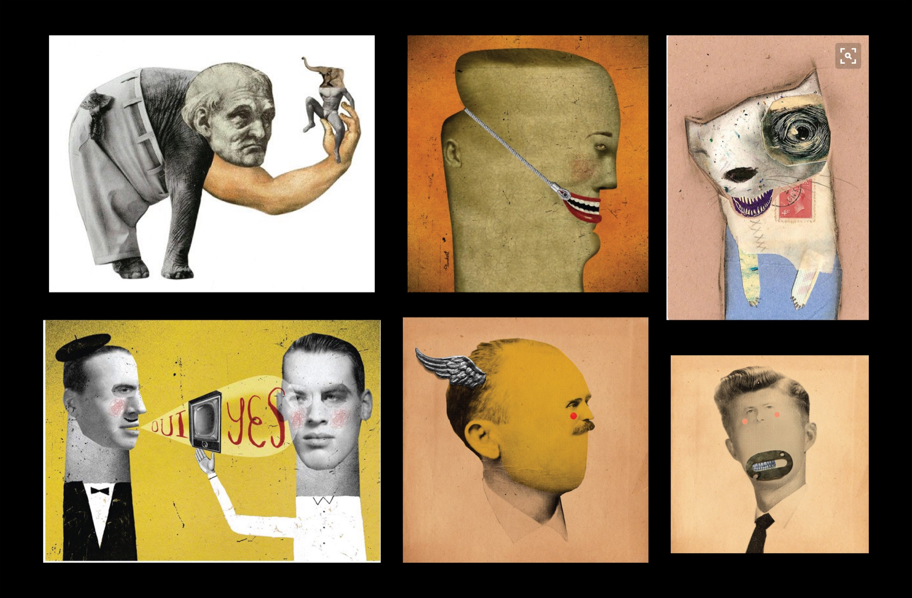
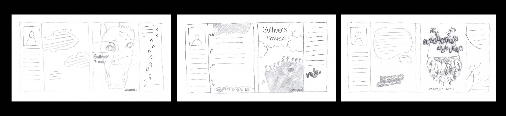
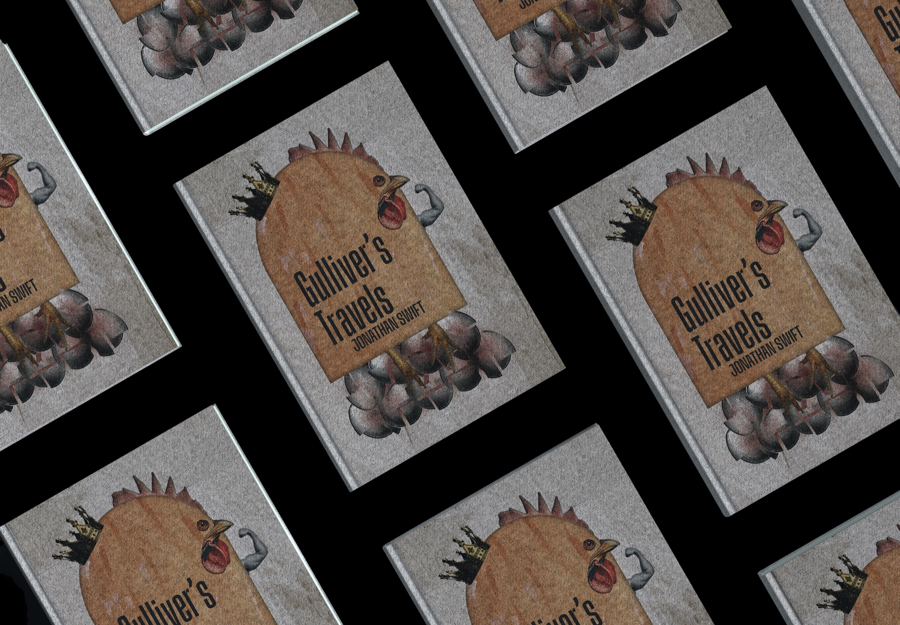
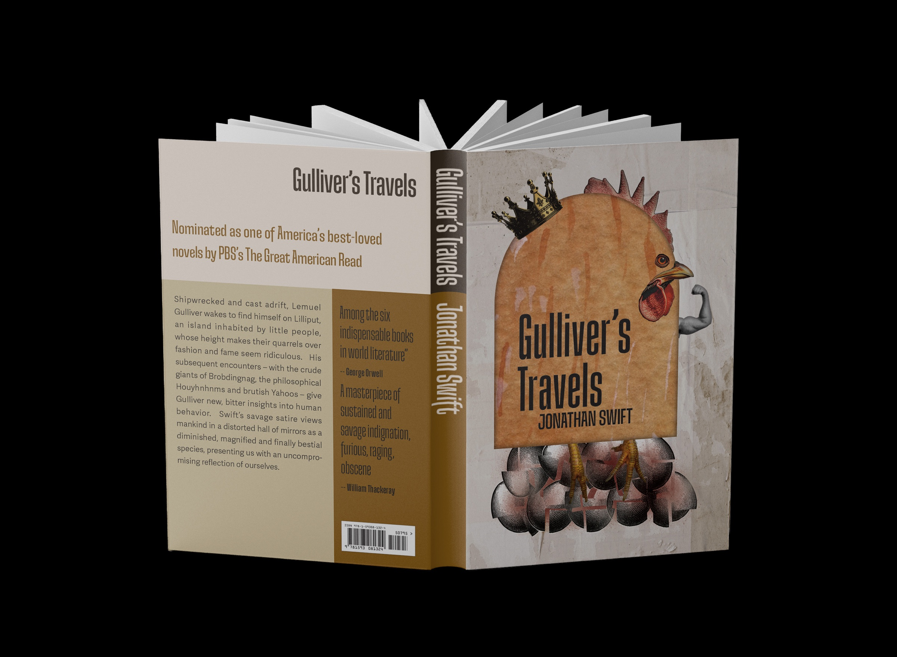
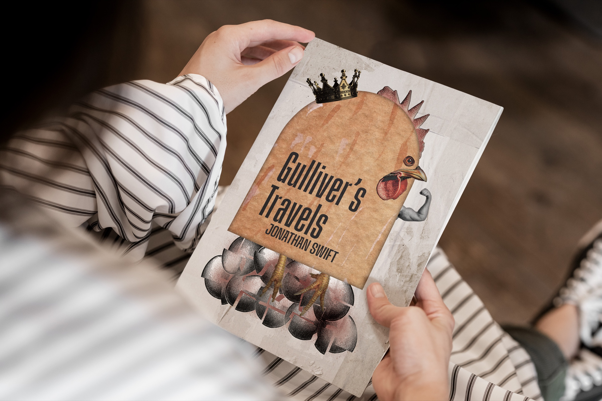
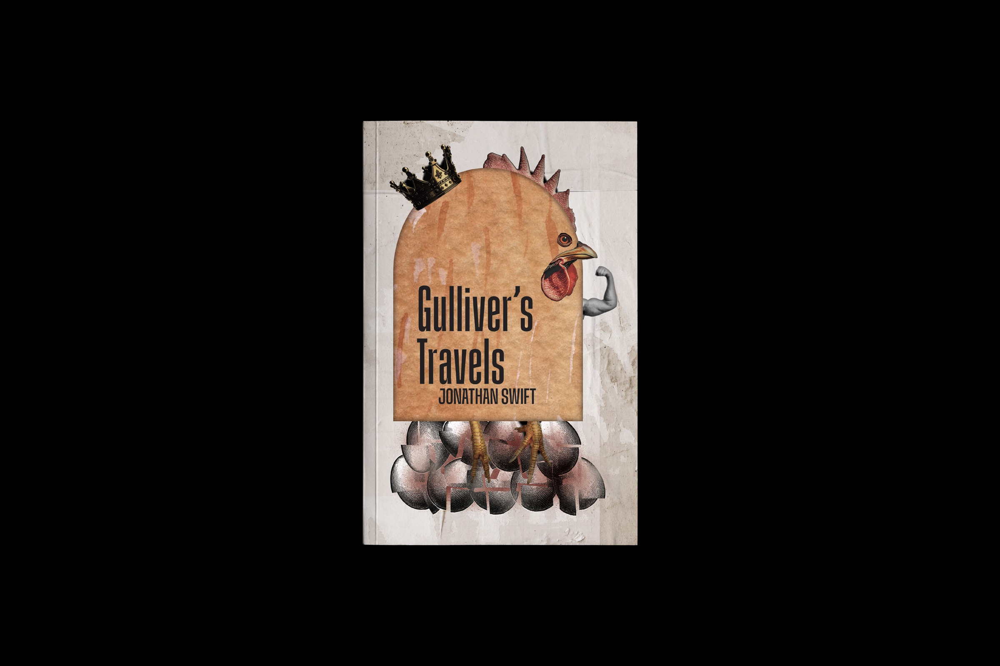

Gulliver's Travels

A full paperback sleeve for Jonathan Swift's Gulliver's Travels, using a crowned rooster, crushed eggs, and condensed typography to interpret the novel's political satire.
- Deliverables
- Front cover, spine, back cover, illustration
This cover focuses on the conflict between the Big-Endians and Little-Endians, who disagree over which end of an egg should be cracked. The project translates this seemingly minor dispute into a visual metaphor for authority, division, and the disproportionate consequences of political conflict.
The challenge was to create a cover that communicated the satirical concept through illustration while maintaining the character of a printed literary edition.
- Cover concept and illustration
- Typography and layout
- Front cover design
- Spine and back cover
- Full paperback sleeve
Eggs, roosters and a very silly war
I gathered references for Swift's satire and for the imagery I could use to stand in for it. The illustrations I pulled share a look: aged paper, muted yellows and browns, and bodies that don't add up, like zipped mouths, covered faces and mismatched heads.

One image for the whole argument
Each sketch lays out the full wrap, with an author portrait and text columns on the back. The fronts try different ideas, all aimed at the same question: could a rooster crushing eggs carry the whole war between the Big-Endians and the Little-Endians in a single image?

The central illustration depicts a rooster wearing a gold crown and flexing a human-like arm above a cluster of cracked grey eggs. The rooster's warm brown body and red comb contrast with the muted eggs and aged tan background. The exaggerated arm and crown transform the bird from an ordinary animal into a figure of authority, reinforcing the power dynamic behind the story's conflict.
The title, Gulliver's Travels, is set in tall, condensed dark-brown capitals across the illustration, with Jonathan Swift's name placed beneath. The typography is integrated into the image rather than separated into an independent title block, allowing the illustration and lettering to function as one composition.
The aged paper texture gives the cover a traditional printed quality, while the exaggerated illustration keeps the concept direct and contemporary. The cracked eggs anchor the lower portion of the design, visually connecting the rooster's dominance to the consequences of the conflict.
Across the full paperback sleeve, the illustration and typography establish a consistent visual direction that connects the book's literary context with its central satirical theme.



